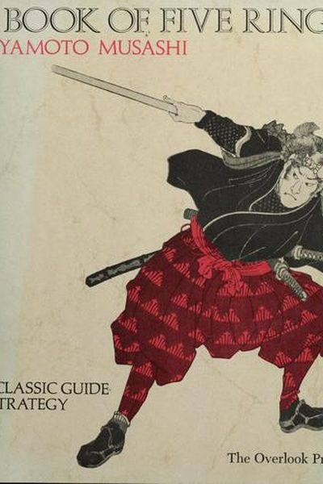

Library › Power & Strategy
The Book of Five Rings — Summary & Key Lessons

The undefeated samurai's 400-year-old manual of strategy — still the bible of fighters, founders and chess masters.
📖 OPEN THE FULL INTERACTIVE BREAKDOWN →🌐 Read it in Hindi, Hinglish, Gujarati, Tamil & 22 more languages — free, with audio.
💡 The Big Idea
Miyamoto Musashi — the undefeated swordsman who won over 60 duels — wrote this book weeks before his death in 1645. It is the most practical strategy text ever written: five scrolls (Earth, Water, Fire, Wind, Void) covering stance, timing, perception and the empty mind. Musashi's core message: victory comes not from technique alone but from seeing clearly, keeping your mind fluid, and striking at the rhythm of your opponent's imbalance.
🧠 The 6 Key Lessons
Lesson 1: The Way Is in Training
The Earth Scroll
Musashi opens with a shocking claim for a warrior: the strategy of the sword applies to everything — carpentry, farming, art, business. The true way is not a set of tricks but a total discipline: daily practice until technique becomes second nature, and the study of other professions so you understand the world's rhythms. Mastery is boring before it is brilliant.
📖 Example: Musashi himself was a renowned painter and sculptor — he practiced calligraphy and carving alongside swordsmanship, saying all arts share the same root. His training never stopped; he was refining his method until his final week. Read the full example →
⚡ Do this: Pick one craft — your work — and commit to deliberate practice daily, plus one 'unrelated' art to study this month. Cross-training sharpens the main blade.
Lesson 2: See What Cannot Be Seen
The Water Scroll: Gazing
Musashi distinguishes two kinds of sight: observation (seeing what is obvious) and perception (seeing what is hidden). 'The eye must be large' — aware of everything at once — 'and the eye must be small' — focused on the opponent's subtle tells. In duels, victory goes to whoever perceives the opponent's intention before the movement begins.
📖 Example: Musashi describes reading an opponent's spirit from his posture, breathing and gaze — the slight weight shift that precedes a strike. In business terms, it is noticing the market's shift before the numbers confirm it. Read the full example →
⚡ Do this: Practice 'wide gaze': soften your focus, take in the whole room/team/situation. Then name one hidden signal you noticed that others missed.
Lesson 3: Strike at the Broken Rhythm
The Fire Scroll: Timing
Musashi's Fire Scroll is a study of timing — he identifies rhythms in all combat: the rhythm of the opponent's breathing, attack patterns, and hesitation. The master's art is to break their rhythm and strike in the gap. When the opponent is off-balance — emotionally, physically, strategically — that is the only moment to commit fully.
📖 Example: Musashi's most famous duel was fought not with a sword but a wooden oar, and won by exploiting timing: he arrived late, made his opponent wait and burn nervous energy, then struck instantly when the samurai's focus dipped. Read the full example →
⚡ Do this: In negotiations or competitions, watch for the other side's rhythm — impatience, overconfidence, fatigue. Prepare your move for that gap, not for the moment of their strength.
Lesson 4: The Mind of No Mind
The Void Scroll
The final scroll is the emptiest: the Void. Musashi means a mind free of fixed ideas, anger, technique-obsession and ego — a mind that simply responds to what is, like water taking any shape. The warrior who plans 'I will do X' is defeated by the unexpected; the empty mind is never surprised and therefore never defeated.
📖 Example: Musashi defeated masters who were famous for specific techniques simply because he had no favorite technique to counter — he used whatever the moment required: long sword or short, oar or fan. Read the full example →
⚡ Do this: Before your next high-stakes moment, empty your mind of the script: no rehearsed lines, no fixed plan. Prepare broadly, then respond to what actually happens.
Lesson 5: Know Your Enemy's Sword
The Wind Scroll
The Wind scroll critiques other schools — Musashi studied rival styles to understand their strengths and their blind spots. His rule: you cannot defeat what you refuse to understand. Respect the enemy's weapons and methods enough to study them; the knowledge is not admiration, it is reconnaissance.
📖 Example: Musashi traveled Japan challenging every school, absorbing their techniques — including the long-sword styles he then designed countermeasures against. His 'know all schools' doctrine kept him undefeated for 60 duels. Read the full example →
⚡ Do this: This month, study your competitor's product, content or strategy properly: their strengths, their assumptions, their blind spots. Write a one-page dossier — then plan against their blind spot.
Lesson 6: The Way Is in Training — Repetition Builds Instinct
The Book of Water
Musashi's warrior philosophy: mastery is not intellectual understanding but physical and mental habit built through relentless repetition. The samurai who has practiced a cut ten thousand times doesn't think when the moment comes — the body knows. Training is not preparation for the fight; training is the fight, rehearsed.
📖 Example: Musashi describes practicing with the sword until the stance and strike became as natural as breathing; in duels, his responses were faster than thought because they bypassed thought entirely. Expertise in any field is the same: instinct is stored practice. Read the full example →
⚡ Do this: Choose one skill and drill the same fundamental for 15 minutes daily for 30 days, focusing on form over variety.
✅ 5-Step Action Plan
- Commit to daily deliberate practice in your craft — plus one cross-discipline.
- Practice wide gaze daily; log one hidden signal you noticed.
- Study the rhythm of your next opponent — and pick your strike gap.
- Enter your next high-stakes moment with no fixed script.
- Write a one-page dossier on your strongest competitor's blind spots.
⚠️ When This Doesn't Work
Musashi's 'the way of strategy' is the most elegant war text ever written — and trench warfare is what happens when strategy freezes: four years of brilliant tactical thinking, millions of casualties, and zero strategic progress, because both sides had perfect strategy and no way to move. Musashi's duels are won by the individual who sees the opening; wars, companies and careers are often won by the side that refuses to enter the trench in the first place. The best strategy sometimes is refusing to fight the war everyone else is stuck in.
💀 The Graveyard Proves It
🕳️ Trench Warfare — Where Strategy Died in the Mud — Millions of Men for Meters of Ground. Burn: ~10 million military deaths; entire nations scarred for a century. Read the full case study →
💬 Best Quotes from The Book of Five Rings
- “Perceive those things which cannot be seen with the eye.”
- “The way is in training.”
- “In strategy, you must know the ways of all professions.”
Interactive version: mark lessons as read, listen in your language, share quote cards.